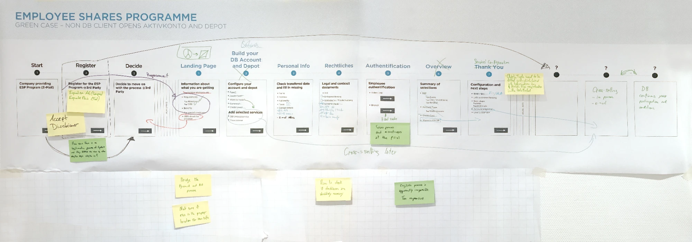
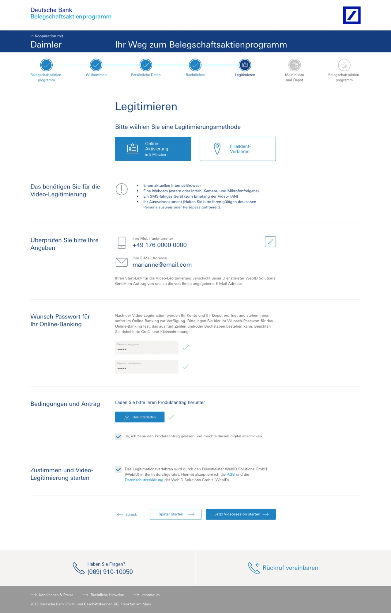
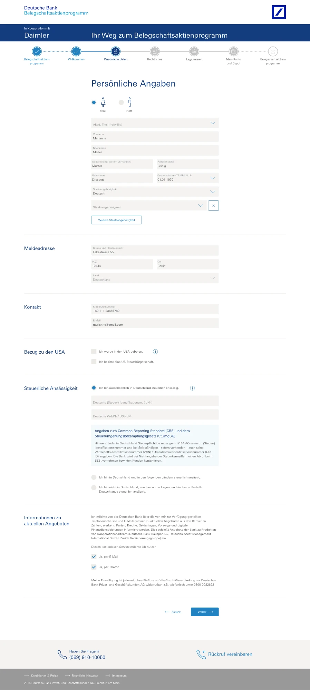
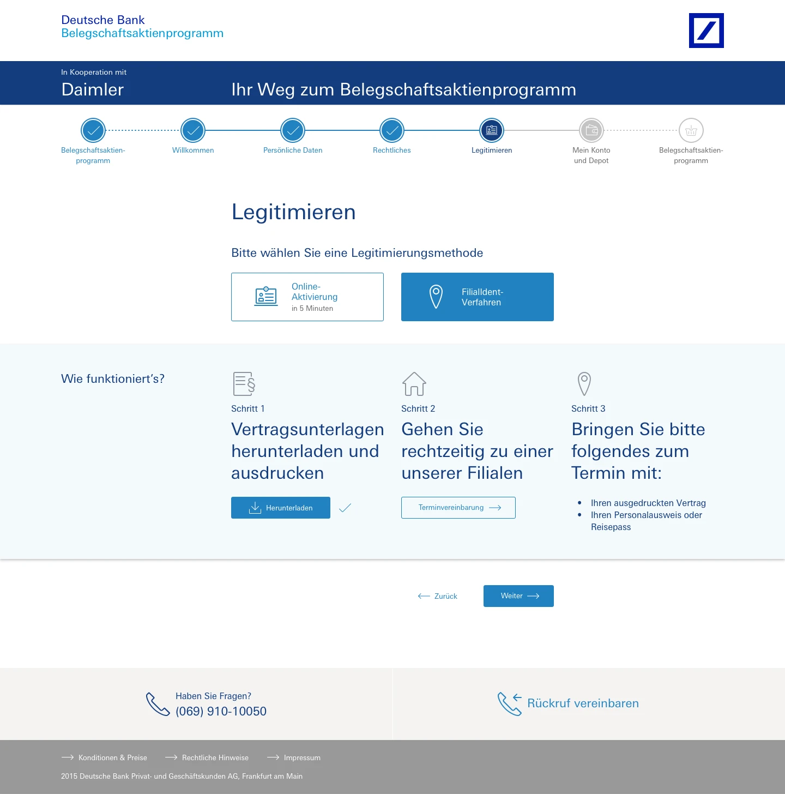
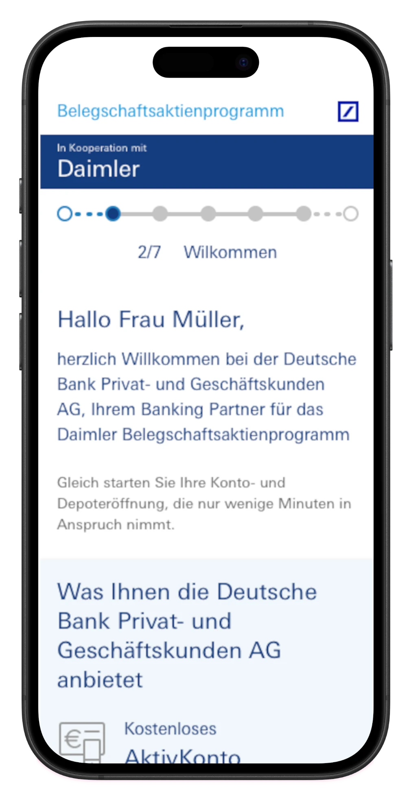
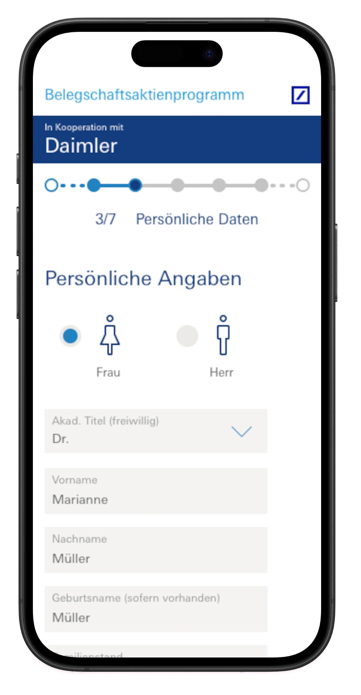
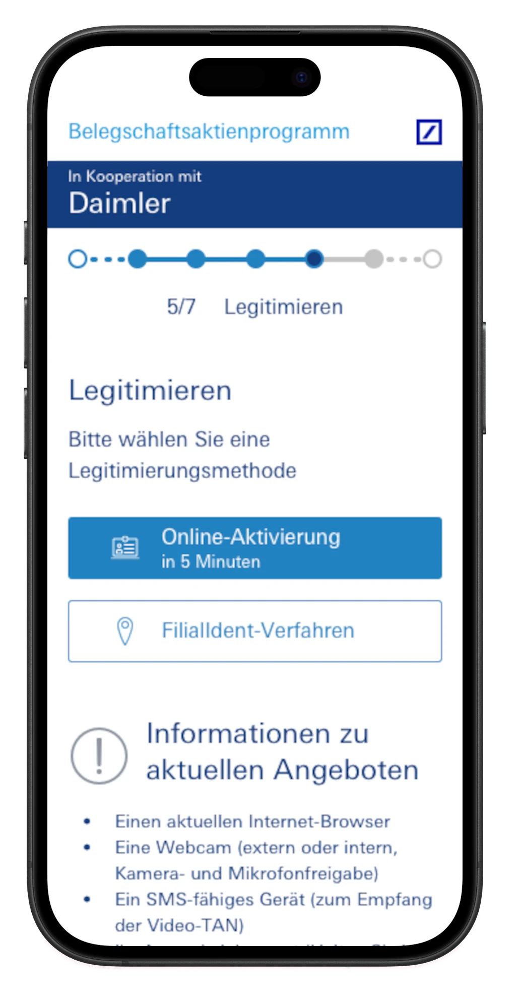
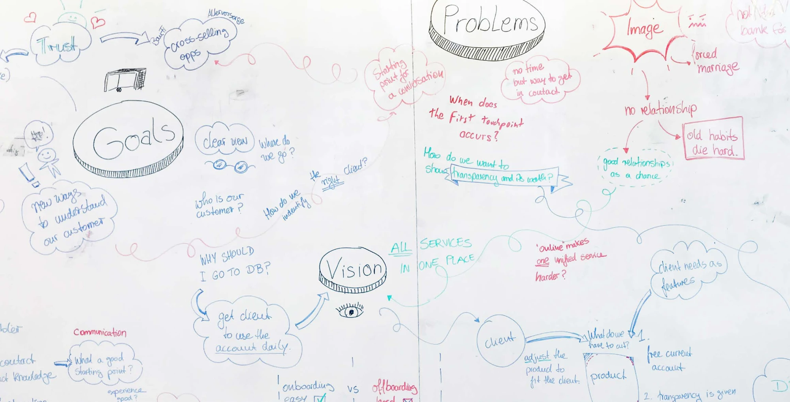

Deutsche Bank - digitalizing account openings
Transforming the account opening process for Business clients to enable quick mass adoption

Project overview
My role
- Full-stack design lead
Tasks
- Product research
- Requirement building
- UX/UI design
- Service design for further applications
Challenge
Deutsche Bank found itself unable to provide new accounts for thousands of new customers due to its reliance on traditional processes and to solve this, it required the full digitalization of it. That didn't mean to just have an online form to fill, though, as it wanted to make this first experience with a Deutsche Bank product the best one possible. And in the heavily regulated financial market, the true challenge is to make its complexity understandable and its requirements quickly and easily met.
Research
Creating a short & sweet journey
The biggest hurdle to opening this particular business account type was the amount of documents, consent, and validation that were necessary in the process. Solving it began with identifying the different steps required, eliminating overlapping requirements, and ordering them in more friendly natural way.

Business-friendly and clear
Design
The color-coding, despite being very strict in maintaining the Deutsche Bank branding, was made playful and distinguished, bringing the user attention to what is necessary.
Above all, it is the way in which information is arranged that guides the eye and sets the pace of the experience.
Attention to the mobile experience
One of the great quality-measuring sticks in this project was the mobile experience. It was another high post goal to be achieved: same quality of experience, without customizations necessary. Bringing the same content of the desktop version, the mobile pages made it even more important for the information structure to be as clear, flexible, and robust as possible.






Extra bit
Design thinking for next-level asset management
In researching for the onboarding platform, we talked with many account managers from the client side who gave us great insight to the issues that happen after the account is opened. So when given this information, our stakeholders wanted to explore how to address them and create a next-level banking experience in asset management for their new clients.
Key insight
The client-bank relationship paradigm is often to „find the clients to its products“ and not to „find the products to its clients“
